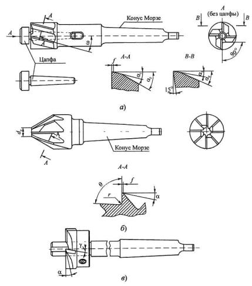

Зенковки, в отличие от обычных зенкеров, срезают стружки большей ширины и имеют менее устойчивое положение в радиальном направлении в момент врезания и особенно в случае расположения режущих кромок перпендикулярно к оси инструмента. Этот процесс часто сопровождается вибрациями и, как следствие, выкрашиванием режущих кромок. Поэтому в конструкциях зенковок для цилиндрических углублений и подрезки торцов предусмотрены направляющие цапфы, выполненные либо за одно целое с корпусом у зенковок малых диаметров, либо вставными, сменными, у зенковок больших диаметров, которые более предпочтительны. При этом сначала цапфы входят в предварительно просверленное отверстие, а затем начинается процесс обработки отверстия. По мере износа сменные цапфы заменяются.
Зенковки изготавливают из быстрорежущей стали, а иногда оснащают напайными твердосплавными пластинами. Хвостовики зенковок соединяются с режущей частью сваркой и могут быть цилиндрическими или коническими.
На рисунке на позиции (a) показана зенковка со сменной цапфой, имеющая винтовые стружечные канавки (z = 4) и применяемая для обработки цилиндрических углублений. Главные режущие кромки располагаются на торце, вспомогательные - на цилиндре. Задние поверхности - двухплоскостные с двойным задним углом α1 = 8°, α2 = 30°, передний угол γ = ω = 15°. Зубья затачиваются остро. На вспомогательных режущих кромках затачивается ленточка шириной f = 0,3 мм и двойной задний угол α1 = 8°, α2 = 30°.
У зенковок для конических углублений (б) главные режущие кромки расположены на конической поверхности, а плоские передние поверхности расположены под углом γ = 0°. В зависимости от диаметра (d = 12...60 мм) число зубьев z = 4... 12, а угол при вершине выбирается соответственно форме углубления и чаще всего берется 2φ равным 60°, 75°, 90° и 120°. Диаметр зенковки на торце d0 = (0,15...0,18)d, угол впадины между зубьями θ = 90...75°. Режущая кромка затачивается доостра или с оставлением узкой ленточки шириной f = 0,03...0,05 мм и заднего угла α = 12°.
Зенковки для подрезки торцовых поверхностей (иногда в литературе такие зенковки называют цековками) имеют режущие кромки только на торце. Вспомогательные кромки у них отсутствуют (в). Зенковки изготавливают хвостовыми или насадными. Для обработки чугунов зубья зенковок оснащают напайными твердосплавными пластинами. Направляющие цапфы изготавливают сменными или за одно целое с корпусом инструмента. Диаметры зенковок d = 14...40мм. Из-за тяжелых условий работы число зубьев у зенковок четное и равно 2...4. Для отвода стружки предусмотрены канавки в форме углублений на торце цилиндрической части. В целях облегчения работы зенковок, имеющих большую длину режущих кромок, рекомендуется на режущих кромках выполнять стружкоделительные канавки, расположенные на зубьях в шахматном порядке.